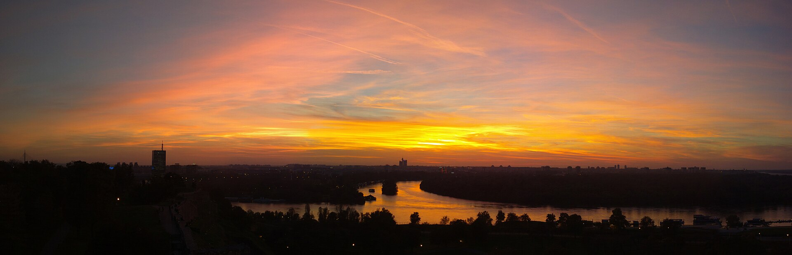
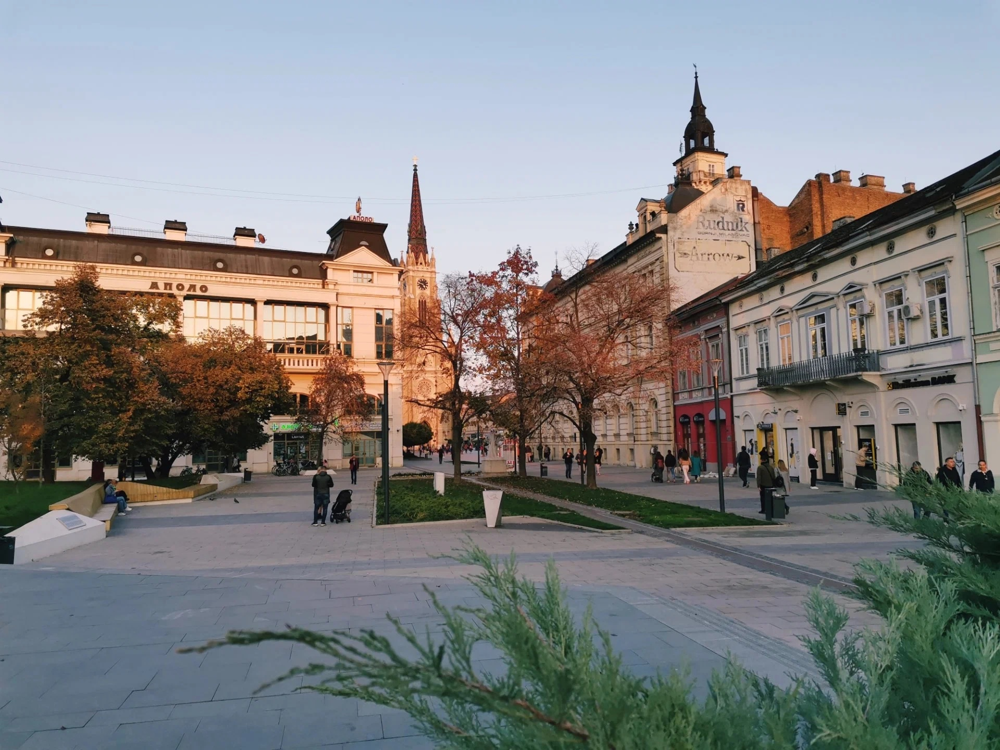
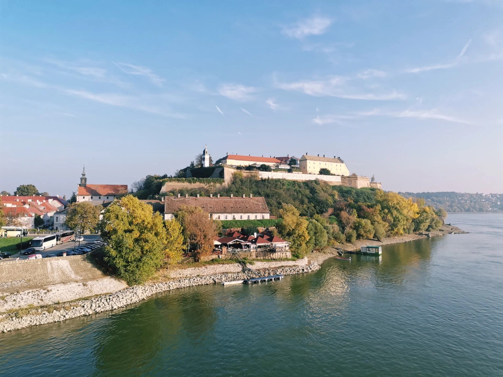
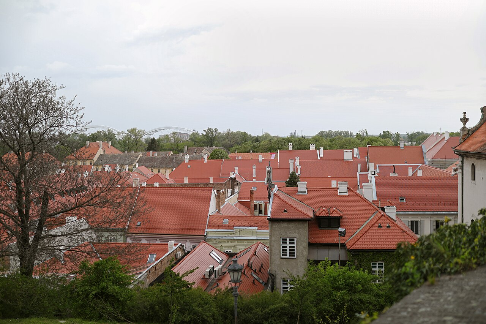
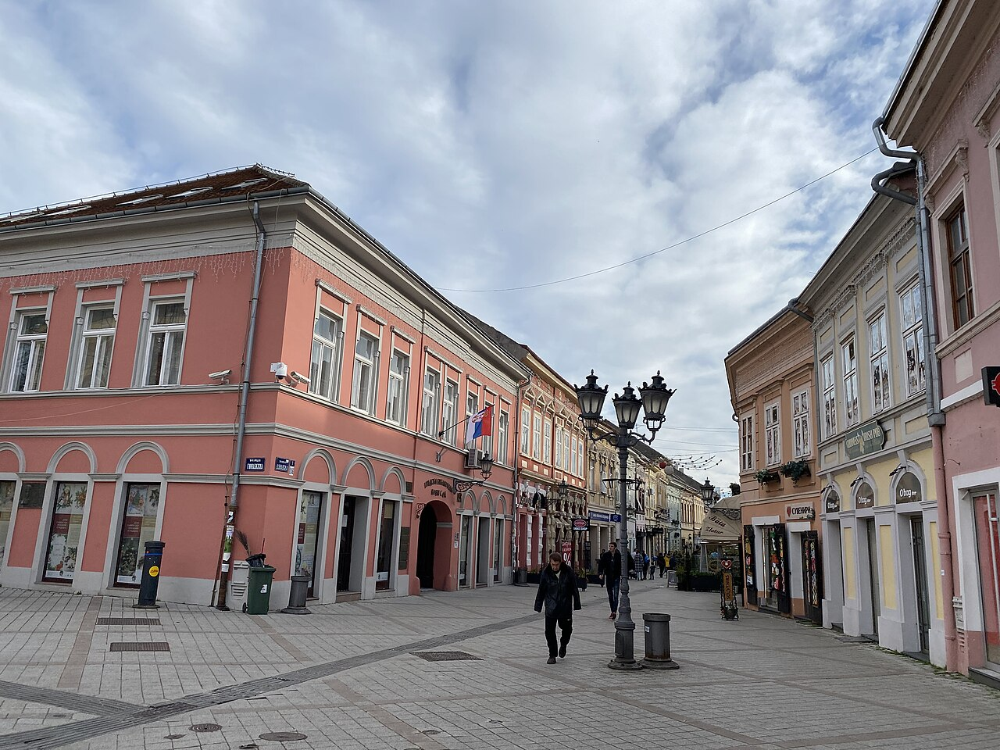
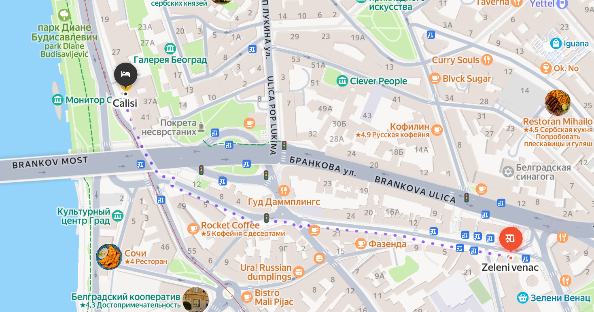

Прилёт → Белград с воды
+10…+21
Заселение, обед рядом с отелем и прогулка по Саве и Дунаю на теплоходе Club Kej в 16:00.

Личный городской путеводитель · октябрь 2026
2–5 октября: речная прогулка в первый день, конференция «Дизайн в Финтехе», отдельный день в Нови-Саде и спокойное утро перед вылетом.
Прогноз проверен 22 сентября 2026 · перед поездкой обновить
Короткая версия
Один полноценный городской день делим между конференцией и вечерней прогулкой. Нови-Сад лучше не втискивать в этот же день, а отдать ему всё воскресенье.
Заселение, обед рядом с отелем и прогулка по Саве и Дунаю на теплоходе Club Kej в 16:00.
Свободное утро, 11:00–16:00 конференция на Дунайской набережной (Дунавски кеј / Dunavski kej), затем Дорчол (Дорћол / Dorćol) и Скадарлия (Скадарлија / Skadarlija).
Поезд 09:46 → Петроварадинская крепость (Петроварадинска тврђава / Petrovaradinska tvrđava) → Дунай → Рыбный рынок (Рибља пијаца / Riblja pijaca) → старый центр и H&M → поезд 17:20.
Завтрак рядом с отелем, короткая прогулка, выезд около 10:45–11:00.
Предварительный прогноз
Осенний город без холода, но с вероятным дождём в субботу и воскресенье. Главная стратегия — лёгкие слои и закрытая обувь.
Футболка или тонкий лонгслив, жакет/куртка на вечер, удобные кроссовки.
Городской комплект для конференции и компактный зонт или дождевой слой.
Быстросохнущие брюки, закрытая обувь с протектором и верхний слой с капюшоном.
Самый удобный дорожный комплект; лёгкая куртка остаётся в ручной клади.
День 1 · пятница
Прилёт 12:45 → отель «Калиси» (Hotel Calisi) и обед → теплоход Club Kej в 16:00 → закат у Победника → Кнез-Михайлова
Прилёт в BEG → автобус в центр После паспортного контроля выйти из терминала к остановке «Аэропорт Никола Тесла — прилёт» (Aerodrom Nikola Tesla — dolasci), №2303, и сесть на автобус 72.
Он идёт без пересадок до Зелени-Венца (Zeleni venac), остановка №1049. Проезд бесплатный, билет покупать или валидировать не нужно. Ориентир времени в пути — 30–40 минут.
Заселение в отель и обед Отель «Калиси» (Hotel Calisi) находится на Карагеоргиевой улице (Карађорђева улица / Karađorđeva ulica, 35), в нижней части города.
Пообедать можно рядом, не тратя время на дорогу:
Прогулка до причала и речная прогулка Выйти из отеля и идти по той же улице вдоль Савы, чтобы к 15:40 быть у причала Club Kej. Посадка — Beton Hala (Бетон хала / Beton Hala), перед рестораном Ambar, Karađorđeva 2–4.
Теплоход отправляется в 16:00; прийти просят за 20 минут. Для справок: +381 64 825 11 03, для бронирования: +381 64 825 11 07. Время рейса стоит подтвердить при бронировании.
С воды видны Белградская крепость, слияние Савы и Дуная, Большой Военный остров, Земун и Новый Белград.
С теплохода → наверх к Калемегдану После высадки можно подняться пешком, но подъём крутой. Если хочется сберечь силы, пройти примерно 150–200 м до остановки Пристаниште-1 (Пристаниште 1 / Pristanište 1), №3597. Сесть на трамвай 2Л или 2Л1 в сторону Калемегдана и проехать одну остановку — до Калемегдана (Калемегдан / Kalemegdan), №5.
От остановки пройти через парк в Верхний город Белградской крепости и дойти до монумента «Победитель» (Победник / Pobednik). Он стоит на верхней террасе: отсюда видны слияние Савы и Дуная, Новый Белград и Большой Военный остров.
Постараться прийти к «Победителю» к 18:00 — примерно за 17 минут до заката 2 октября. Тогда получится увидеть панораму при дневном свете, сам закат и первые сумерки.
Крепость → Кнез-Михайлова После заката не спускаться обратно к реке. От «Победителя» пройти назад через Верхний город и парк к городскому входу: Калемегдан выходит к улице Кнез-Михайлова (Кнез Михаилова / Knez Mihailova), главной пешеходной улице Белграда.
Дальше без жёсткого тайминга пройти к площади Республики, рассматривая фасады, магазины и вечерний центр. Если устанешь, можно завершить прогулку в любой момент и поехать в отель.
Главные ориентиры — посадка на теплоход к 15:40 и вид с крепости около 18:00. Если дорога из аэропорта затянется, на обед рядом с отелем останется меньше времени.
Тёмно-синий Дунай, известняк крепости, кирпич, медное вечернее небо.
На себе: комфортные брюки + футболка/лонгслив + лёгкая куртка. В ручной клади держать слой на вечер и компактный зонт.
День 2 · суббота
Свободное утро → «Хаос Арткласа» (Хаос Арткласа / Haos Atrklasa), Дунайская набережная, 48 (Дунавски кеј 48 / Dunavski kej 48) → Дорчол (Дорћол / Dorćol) → Скадарлия (Скадарлија / Skadarlija)
Фиксированное событие
11:00 — 16:00
Завтрак и короткая прогулка Не уходить далеко: запас времени нужен на дорогу к площадке и регистрацию.
Быть на месте Конференция идёт на русском языке, поэтому отдельной подготовки по навигации внутри события не требуется.
После конференции — по погоде Если сухо, пройти по Дунайской набережной (Дунавски кеј / Dunavski kej) и Дорчолу (Дорћол / Dorćol); если дождь, сразу ехать в старый центр на ужин.
Скадарлия (Скадарлија / Skadarlija) или Цетиньская улица (Цетињска улица / Cetinjska ulica) Неспешная прогулка и ужин без обязательной длинной программы.
Собранный городской комплект, в котором удобно сидеть пять часов и затем гулять: прямые брюки, комфортная обувь, верх без сложной многослойности.
Зонт или тонкая куртка с капюшоном, пауэрбанк, бутылка воды и небольшой шоппер. Дождь вероятен в течение дня.
День 3 · воскресенье
Прямой автобус 36 до вокзала → поезд 09:46 → крепость и кофе с видом → рынок и старый центр → поезд 17:20 → Белград




Дополнительные фото: крыши — Miluša Snidová, Дунайская улица — Vacant0; CC BY-SA 4.0, показаны с кадрированием.
Выйти из отеля «Калиси» (Хотел Калиси / Hotel Calisi) Пешком идти к остановке Савская площадь / Савская улица (Савски трг / Савска / Savski trg / Savska), код 478. На дорогу заложить около 20 минут; цель — быть на остановке к 08:10. Не путать с остановкой 1726 на противоположной стороне: она временно закрыта.
Сесть на автобус 36 без пересадки Нужен рейс от остановки 478 через Славию до вокзала Белград-Центр (Београд Центар / Beograd Centar), остановка 2903. 08:25 — ориентир для промежуточной остановки, точное прибытие автобуса проверить накануне; запас до поезда оставлен.
Быть на вокзале Белград-Центр (Београд Центар / Beograd Centar) Это Прокоп (Прокоп / Prokop), а не старое здание вокзала на Савской площади. Найти платформу по табло и оставить примерно полчаса до отправления.
Поезд IR 621 в Петроварадин (Петроварадин / Petrovaradin) Прибытие в 10:15. Билет лучше купить заранее на маршрут Белград-Центр → Петроварадин, не до закрытого для этих поездов вокзала Нови-Сада.
От станции — сразу к верхней части крепости Взять такси до Часовой башни (Сат кула / Sat kula) или верхнего входа в крепость: короткая поездка экономит подъём и оставляет больше времени на центр. Пешком от станции около 3 км и примерно 40 минут — для этого плана неудобно.
Петроварадинская крепость (Петроварадинска тврђава / Petrovaradinska tvrđava) Пройти по верхним бастионам к Часовой башне, посмотреть на красные крыши и панораму Дуная. Отдельно заметить необычные часы: большая стрелка показывает часы, маленькая — минуты.
Кофе на террасе с видом Выбрать столик у Офицерского павильона (Официрски павиљон / Oficirski paviljon): здесь расположены рестораны с видом на Дунай и Нови-Сад. На кофе и небольшой перекус — около получаса.
Спуститься через Подградье (Подграђе / Podgrađe) От крепости — по каменной лестнице к барочным домам нижнего города, затем пешком через Варадинский мост (Варадински мост / Varadinski most). Остановиться на мосту ради вида на крепость, как на фото в галерее.
Войти в центр через Дунайский парк (Дунавски парк / Dunavski park) Короткая прогулка по парку, затем идти к площади Республики (Трг републике / Trg republike).
Рыбный рынок (Рибља пијаца / Riblja pijaca) Посмотреть местные продукты и купить что-нибудь к перекусу. В воскресенье рынок работает до 14:00, поэтому он стоит в маршруте до прогулки по площади и магазина.
Владычанский двор (Владичански двор / Vladičanski dvor) и собор Святого Георгия (Саборна црква Светог Георгија / Saborna crkva Svetog Georgija) От рынка около 5–7 минут пешком. Рассмотреть кирпичный фасад дворца; затем зайти в соседний православный собор, если в это время он открыт для посетителей.
Пешеходная улица Змай-Йовина (Змај Јовина улица / Zmaj Jovina ulica) От памятника поэту Йовану Йовановичу Змаю у Владычанского двора идти по улице к центральной площади: старые фасады, витрины и кафе лучше смотреть без спешки.
Площадь Свободы (Трг слободе / Trg slobode) Посмотреть ратушу (Градска кућа / Gradska kuća), неоготический храм Имени Марии (Црква Имена Маријиног / Crkva Imena Marijinog) и памятник Светозару Милетичу (Светозар Милетић / Svetozar Miletić). Если храм открыт — заглянуть внутрь; ратушу планировать как осмотр снаружи.
Обед в старом центре Выбрать кафе рядом с площадью или на пешеходных улицах; на обед заложить 35–40 минут, без поездки в другой район.
H&M на улице Короля Александра, 3 (Краља Александра 3 / Kralja Aleksandra 3) Магазин рядом с площадью, поэтому отдельный транспорт не нужен. По текущему расписанию в воскресенье он открыт с 09:00 до 21:00; на покупки оставить около получаса.
Завершить прогулку и идти к бесплатному автобусу От H&M примерно 5–10 минут пешком до остановки у Шафариковой улицы (Шафарикова улица / Šafarikova ulica) на Успенской улице (Успенска улица / Uspenska ulica). Быть там не позднее 16:15.
Бесплатный автобус до станции Петроварадин По опубликованному расписанию он отправляется из центра в 16:26 и едет около 20 минут. Это последний удобный рейс под поезд 17:20: если его пропустить, следующий автобус в 17:00 уже не оставит запаса — тогда потребуется такси.
Станция Петроварадин Найти платформу по табло, открыть обратный билет и не уходить от станции: до поезда остаётся около получаса.
Поезд REx 757 в Белград Прибытие на вокзал Белград-Центр (Београд Центар / Beograd Centar) в 18:10.
Обратно в отель — тоже без пересадки У вокзала сесть на 36 на остановке 2903, выйти на Савской площади / Савской улице (Савски трг / Савска / Savski trg / Savska), код 478, и пройти пешком до отеля. С ожиданием автобуса и прогулкой возвращение ориентировочно к 19:00.
Сначала крепость на том же берегу, где поезд прибывает в Петроварадин. Затем пешком через мост — рынок до закрытия, старый центр и магазин рядом с площадью. В 16:26 — автобус обратно к станции.
Пыльно-голубое небо, розовые фасады, серый камень, Дунай и красные крыши.
Лёгкие длинные брюки, закрытые кроссовки с хорошей подошвой, базовый слой и непромокаемая куртка. На крепости открыто и ветрено.
Музей Николы Теслы (Музеј Николе Тесле / Muzej Nikole Tesle) находится в Белграде, на Крунской улице, 51 (Крунска 51 / Krunska 51). В насыщенный день Нови-Сада его не включаем; он подойдёт для отдельного свободного окна в Белграде. Часы работы музея ↗
День 4 · понедельник
Завтрак → короткая прогулка у Савы → аэропорт BEG → Москва
Спокойный завтрак Оставить только короткую прогулку рядом с отелем — без музеев и поездок на другой берег.
Вернуться за вещами и выселиться Формальный checkout до 12:00, но под рейс лучше закончить раньше.
Выезд в аэропорт Цель — быть в терминале около 12:00, за 2,5 часа до вылета.
JU 132 в Москву Прилёт в Шереметьево в 18:45 по местному времени.
Капсула на четыре дня
Комплект рассчитан на город, конференцию, дождь и один насыщенный день с большим количеством ходьбы.
Подтверждено
На странице сохранены только данные, которые нужны в поездке. Стоимость, номер заказа и персональные данные намеренно не публикуются.
Туда · «Эйр Сербия» (Ер Србија / Air Serbia) JU 131
2 октября · пятница · прямой рейс
Обратно · «Эйр Сербия» (Ер Србија / Air Serbia) JU 132
5 октября · понедельник · прямой рейс
2–5 октября · 3 ночи
Карагеоргиева улица, 35 (Карађорђева 35 / Karađorđeva 35), Белград
BEG ↔ центр
Прямой маршрут
Бесплатно 30–40 минут без пересадок
В аэропорту. Ищи остановку на нижнем уровне у выхода из зоны прилёта: «Аэропорт Никола Тесла — прилёт» (Аеродром Никола Тесла — доласци / Aerodrom Nikola Tesla — dolasci), код 2303.
В городе. Едь до конечной Зелени-Венац (Зелени венац / Zeleni venac), код 1049. До отеля «Калиси» (Хотел Калиси / Hotel Calisi) по вашей карте около 5 минут пешком.

2 октября, из аэропорта: 13:05 · 13:30 · 13:55 · 14:20 · 14:45 · 15:10
5 октября, от Зелени-Венца (остановка 1047): 10:45 · 11:10 · 11:35 · 12:00 · 12:25 · 12:50 · 13:15 · 13:40.
Проверить актуальное расписание 72 ↗Рядом с отелем · Карагеоргиева улица
Пять вариантов на той же улице: от горячего обеда до продуктов в номер. Цены и часы работы — ориентир; перед визитом их лучше проверить.
Лучший вариант, чтобы взять горячее с собой: заведение прямо рядом с отелем. Есть доставка через Wolt и Glovo.
Недорогой фастфуд
Karađorđeva 61
Сэндвичи, солёные и сладкие блинчики. Ориентир по стоимости — 500–1000 RSD.
В пятницу до 16:00.
Местная пекарня
Karađorđeva 61a · Bakery “Red Star”
Зайти за буреком навынос; ориентир по стоимости — до 500 RSD.
В пятницу до 14:00, поэтому в день прилёта почти наверняка не успеть.
Продукты в номер
Karađorđeva 65 · супермаркет
Вода, напитки, йогурт, фрукты, снеки и готовая еда.
В пятницу 07:00–22:00.
По пути к причалу
Karađorđeva 4b · в сторону Beton Hala
Бургеры, тортильи, фалафель, fried chicken. Есть еда навынос, принимают карты; ориентир — 1000–1500 RSD.
3 октября · 11:00–16:00
«Хаос Арткласа» (Хаос Арткласа / Haos Atrklasa) находится у Дуная, поэтому после программы удобно продолжить день в Дорчоле (Дорћол / Dorćol) и не возвращаться сразу к отелю.
«Хаос Арткласа» (Хаос Арткласа / Haos Atrklasa) · Дунайская набережная, 48 (Дунавски кеј 48 / Dunavski kej 48) · Белград 11000
4 октября · воскресенье
Все подходящие поезда на день поездки — без привязки к одному рейсу. Цветом отмечены удобные варианты: туда 09:46 или 10:00, обратно 17:20 или 18:01.
Цены в таблицах — ориентир за один билет во 2-м классе из поиска на 4 октября. Наличие мест и итоговую стоимость проверить перед оплатой.
В официальной кассе «Сербских железных дорог» (Србија Воз / Srbija Voz) выберите «Povratno putovanje», станции Белград-Центр и Петроварадин и оба поезда. На поездку туда-обратно действует скидка 20%; окончательную цену сервис покажет после выбора рейсов.
Купить билеты на поезд ↗Поезда из Белграда идут до Петроварадина (Петроварадин / Petrovaradin), не до главного вокзала Нови-Сада. Организованный автобус до центра Нови-Сада и обратно бесплатный. У станции он останавливается на обычной остановке городского транспорта; в центре отправляется с Успенской улицы (Успенска улица / Uspenska ulica), у Шафариковой улицы (Шафарикова улица / Šafarikova ulica). Дорога занимает около 20 минут — оставьте запас перед обратным поездом.
Расписание бесплатного автобуса ↗Перед стартом
Обновить прогноз Белграда и Нови-Сада, особенно интенсивность дождя 3–4 октября.
Пройти онлайн-регистрацию, проверить терминал и точную норму ручной клади по бронированию.
Открыть билеты на поезда 09:46 и 17:20; проверить автобус 36 до вокзала и бесплатный рейс из центра Нови-Сада в 16:26.
Проверить отправление автобуса 72 от Зелени-Венца и приехать в BEG около 12:00.
Логистика проверена 23 сентября 2026
Расписание и прогноз могут измениться. В путеводителе они используются как рабочий план, а не как гарантия.
Фото обложки: «Belgrade Panorama», Vladimir Nolic / Wikimedia Commons, CC BY-SA 4.0. Авторы дополнительных снимков Нови-Сада указаны под галереей.
Анна · Белград и Нови-Сад · 2–5 октября 2026
Любимые вещи, осенние цвета и выбор под настроение — от дороги из Москвы до прогулок по старым улочкам.
01 / вещи
12 вещей, удобная обувь и одна сумка. Джинсовка добавлена как плотная верхняя куртка — поверх неё рубашку не надеваем.
Два разных верха. Плотная джинсовка — на дорогу и сухую прохладу. Бордовая ветровка — на ветер и сырость. Рубашка хаки остаётся лёгким дневным слоем.
Иллюстрации передают сочетания. У твоей джинсовки плотный деним и свободный крой; синий свитшот без начёса, а шоколадная юбка очень тонкая.
Альтернатива синему и вариант для образа № 11. Чтобы повторить обе картинки № 03 и № 11 буквально, нужны два цвета; для компактного багажа достаточно одного.
Для дороги в образе № 11. Если вместо них берёшь джинсы, сохраняй остальные слои.
Вариант замены лёгким шоколадным брюкам. Удобны для выезда из Москвы и обратной дороги.
02 / цвет
Тёплая шоколадная база, вишня и бордо, два синих оттенка и хаки.
Футболка · тельняшка
Брюки · юбка · рубашка
Рубашка · ветровка · свитшот
Синий свитшот
Хлопковая рубашка
Топ
Плотная куртка
Сумка
Платье · обувь · брюки
03 / сочетания
Первые восемь сохранены. Варианты 09–12 — с твоей плотной удлинённой джинсовкой.
ОБРАЗ 01
Конференция · кафе
Вишнёвая рубашка + молочная футболка + шоколадные брюки
В тёплом зале рубашку можно снять. Основной выбор на конференцию.
ОБРАЗ 02
Земун · центр
Рубашка хаки + молочная футболка + шоколадные брюки
Расстёгнутая рубашка и светлая база — для спокойной дневной прогулки.
ОБРАЗ 03
Поезд · прохладный вечер
Синий свитшот + футболка + шоколадные брюки + бордовая ветровка
Свитшот без начёса. На ветер оставь ветровку, в помещении сними её.
ОБРАЗ 04
Нови-Сад · дневная прогулка
Тельняшка + шоколадные брюки; ветровка по погоде
Лонгслив закрывает руки. Ветровку возьми, если возвращаешься вечером.
ОБРАЗ 05
Тёплый день · фотографии
Коричневая рубашка + топ какао + шоколадная юбка
Повтор твоего образа с моря: лёгкая рубашка узлом спереди. Все слои тонкие.
ОБРАЗ 06
Старые улочки · тёплый день
Рубашка хаки + молочная футболка + шоколадная юбка
Рубашку можно снять. Хороший вариант для неспешной прогулки с остановками в кафе.
ОБРАЗ 07
Центр · кафе · фотографии
Чёрное платье + расстёгнутая рубашка хаки
Рубашка — лёгкий верх. Для прохладного вечера пригодится куртка.
ОБРАЗ 08
Город · лёгкая прохлада
Чёрное платье + бордовая ветровка
Колготки по ощущениям. Для долгой прогулки выбери знакомые удобные кроссовки.
ОБРАЗ 09
Старые улицы · кафе
Плотная джинсовка + молочная футболка + шоколадные брюки
Джинсовка — полноценный верх. Носи открытой в сухую погоду.
ОБРАЗ 10
Город · фотографии
Чёрное платье + плотная удлинённая джинсовка
Расстегни куртку, чтобы платье было видно. Здесь намеренно свободный силуэт.
ОБРАЗ 11
Дорога из Москвы
Джинсовка + бордовый свитшот + футболка + тёмные брюки
Джинсовка свободно входит поверх свитшота. Если берёшь один синий свитшот, его можно надеть сюда вместо бордового.
ОБРАЗ 12
Тёплый день · фотографии
Плотная джинсовка + топ какао + шоколадная юбка
Самый объёмный силуэт: примерь до поездки. В тёплую часть дня куртку можно снять.
Во всех образах — удобные кроссовки и сумка тауп. № 09 и № 11 — основные сочетания с джинсовкой; № 10 и № 12 — варианты с платьем и юбкой.
04 / с собой в поездку
Выбирай утром по ощущениям. Номер ведёт к нужному образу.
Футболка, тонкий топ, платье или юбка. Рубашка — съёмный слой; куртку можно оставить для вечера.
Футболка или лонгслив под свитшот, сверху джинсовка. Для дороги выбирай джинсы или подходящие тёмные брюки.
Футболка + свитшот + ветровка. На набережной добавляй верхний слой раньше, чем на защищённых улицах.
Земун и старые улочки: № 02, 06 и 09. Молочный, хаки и джинсовый синий рядом с тёплыми фасадами.
Кафе и фотографии: № 05, 07, 10 и 12. Выбирай тонкую юбку на тёплую часть дня.
Набережная и открытые места: № 03 или 04 с ветровкой. Земун и крепость пока не привязаны к конкретному дню.
Обновлено 26 сентября 2026. Цвета на иллюстрациях ориентировочные; плотность и посадку сверяй со своими вещами.
{kind=link}
{kind=link}
{kind=link}
{kind=link}
{kind=link}
{kind=link}